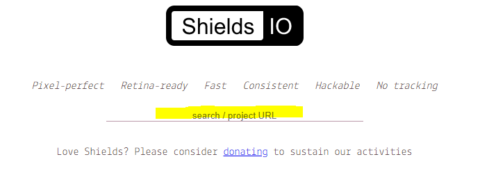
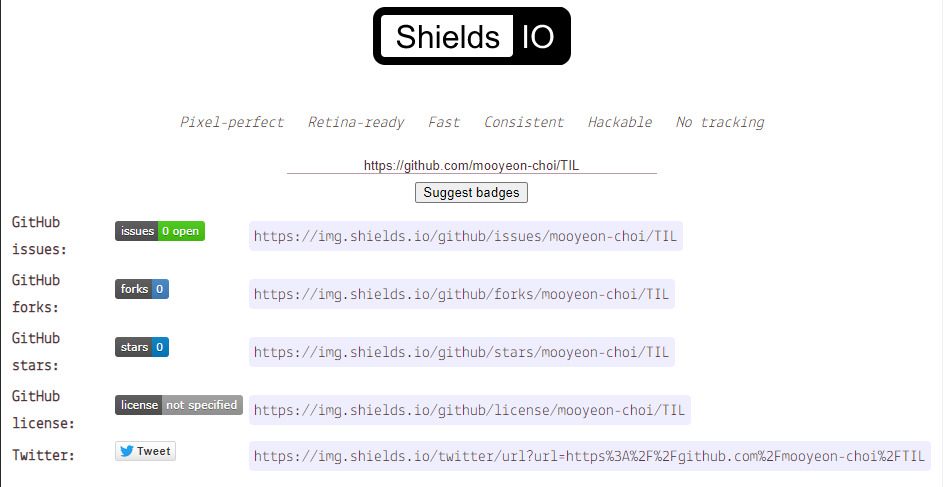

Markdown
목차
참고하면 좋은 자료들
Github Markdown Emoji Markup
깃헙 markdown에서 사용할 수 있는 Emoji😊를 모아놓은 rxaviers님의 gist페이지 ctrl + F 로 간단하게 사용하고 싶은 Emoji를 찾아 복사해서 쓰면 된다!
Shields.io
다양한 뱃지를 만들어주는 사이트 깃헙 README에 사용하면 좀 더 보기좋게 꾸밀 수 있다.
뿐만 아니라 아래와 같이 내 프로젝트 Repository의 URL을 입력하면 자동으로 추천 Badge들을 생성해주어 쉽게 만들어줄 수 있다


Heading
# Heading 1
## Heading 2
### Heading 3
#### Heading 4
##### Heading 5
###### Heading 6
Heading 1
Heading 2
Heading 3
Heading 4
Heading 5
Heading 6
Line
paragraph
___ (언더바를 세번 입력해준다.)
paragraph
Text attributes
This is the **bold** text and this is the *italic* text and let's do ~~strikethrough~~.
This is the bold text and this is the italic text and let's do strikethrough.
Quote
> Don't forget to code your dream.
Don't forget to code your dream.
Bullet list
Fruits:
* 🍎
* 🍋
Other fruits:
- 🍑
- 🍏
Fruits:
- 🍎
- 🍋
Other fruits:
- 🍑
- 🍏
Numbered list
Numbers:
1. first
2. second
3. third
Numbers:
- first
- second
- third
Link
[Click](https://github.com/mooyeon-choi)
[문서 내 이동](#문서-내-이동)
## 문서 내의 Heading으로도 이동할 수 있다 이때 띄어쓰기는 '-'로 입력해주어야한다.
문서 내 이동
Image

## img Tag
<img src="image url" />
Table
|Header|Description1|Description2|
|--:|:--|:--:| ## 오른쪽, 왼쪽, 가운데 정렬
|cell1|cell2|cell3|
|cell1|cell2|cell3|
| Header | Description1 | Description2 |
|---|---|---|
| cell1 | cell2 | cell3 |
| cell1 | cell2 | cell3 |
Code
# `(백틱) 키
To pring message in the console, use `console.log('your message')` and ..
```ts
console.log('your message')
```
To pring message in the console, use console.log('your message') and ..
console.log("your message");